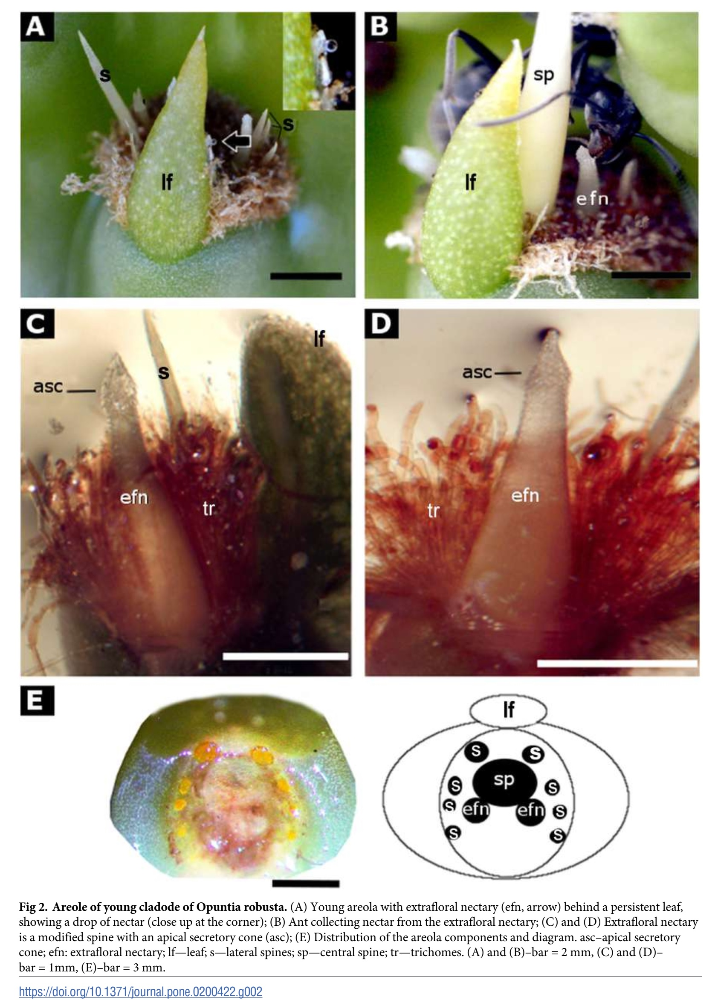
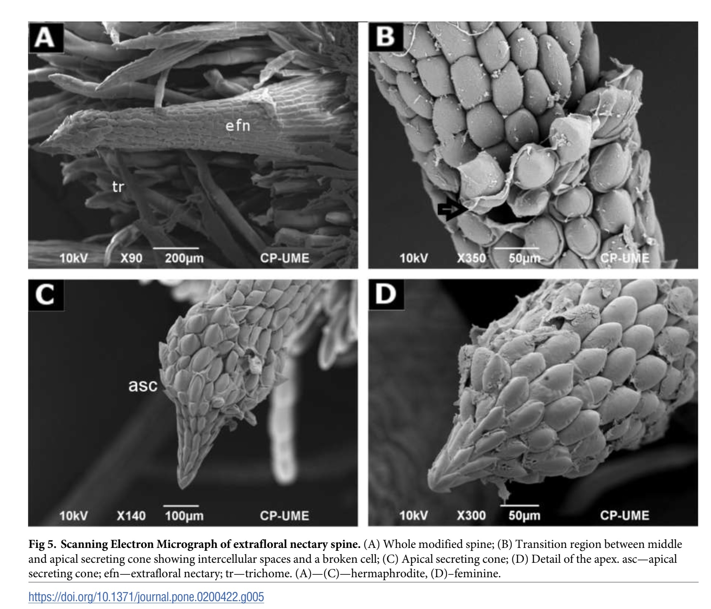

Primera descripción de nectarios extraflorales en Opuntia robusta (Cactaceae): Anatomía y ultraestructura
 Hasta donde sabemos, no hay estudios sobre la estructura y función ecológica de los nectarios extraflorales (EFNs) en Opuntia robusta. Esta es la primera descripción de EFNs en O. robusta, donde las espinas jóvenes tienen una estructura interesante y una función secretora, que son diferentes de los EFNs descritos en otras especies de Cactaceae. Se utilizó microscopía de luz, de barrido y de transmisión de electrones para examinar la morfología, anatomía y ultraestructura de las espinas secretoras en areolas de individuos femeninos y hermafroditas de O. robusta.
Los cladodios jóvenes desarrollan aréolas con espinas modificadas y secretoras que actuan como EFNs, y sólo están activos durante la fase inicial de crecimiento. Los EFNs son estructuras secretoras no vascularizadas, sin estomas, que constan de un tejido meristemático basal, una región de elongación media y un cono secretor apical formado por grandes células epidérmicas globulares, que contienen néctar extrafloral. Observamos la presencia de aparato de Golgi, vesículas y plástidos en las células medulares y supraepidérmicas de la espina. Proponemos que el néctar se almacena en las células globulares del ápice de la espina y se segrega al romperse las células globulares o mediante orificios en la pared.
Registramos que las hormigas fueron mas abundantes en cladodios más jóvenes con EFNs: este resultado es paralelo a las predicciones de la Hipótesis de la Defensa Óptima, que afirma que los órganos vegetales más jóvenes deberían estar mejor defendidos que los más viejos porque su pérdida produce un mayor impacto en el fitness de la planta.
Publicación completa en: